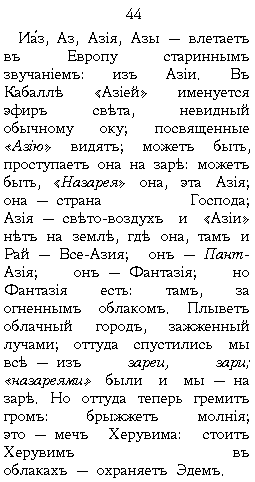

Glossolalia (Section 44)
GLOSSOLALIA

Iaz, Az, Aziya, Azy -- flies to Europe as an ancient sound: from Asia. In the Cabbala "Asia" is the name for the ether of light, invisible to the ordinary eye; the initiated see "Azia"; maybe, it steps through at the dawn [na zare]: maybe, it is Nazareja [At the Dawning], this Asia; she is -- the country of the Lord; Asia is -- light-air and there is no Asia on the earth, where it is, there is Paradise -- All-Asia; Paradise is -- Pant-Asia; Paradise is -- Phantasia; but Phantasia is: there, beyond the fiery cloud. The cloudy city floats, burning with rays; from there we all descended -- from the fiery glow [zarei], dawns [zari]; we were "Nazarites"[ Nazareyans] -- at dawn [na zare]. But now from there thunder resounds: lightning spurts; this is -- the sword of a Cherub: The Cherub stands in the clouds -- protecting Eden.